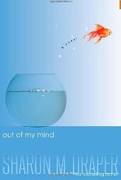
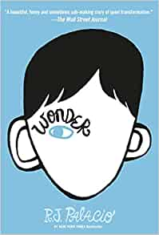
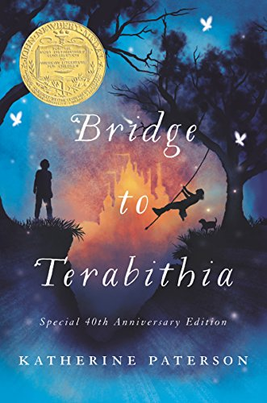

1. Out of My Mind | Sharon M. Draper
Out of My Mind is a book about Melody, a girl born with cerebral
palsy. Unable to speak or move, she has been mistreated her whole
life. But what people don't know is that there is a brilliant mind
at work in Melody. Suddenly, she gets a chance to compete in a
trivia competition. Armed with her new communicating device, she
embarks on the journey to prove her worth in this heartwarming
novel.

2. Wonder | R.J. Palacio
Wonder tells the experiences of Auggie, a 5th grader with a severe
facial difference. As the semester starts, he meets bullies, some
friends, and most of all, people who stare at him like he is an
alien. Wonder makes you rethink about what empathy, compassion,
acceptance, and friendship really is.

3. Bridge to Terabithia | Katherine Paterson
Bridge to Terabithia tells about the story of Jess and Leslie, 2
friends that reign over an imaginary world that they name
Terabithia. Jess changes throughout the story with the help of
Leslie and learns to let go of his frustration. This classic book
about friendship will leave a lasting impact on your views about
life.
